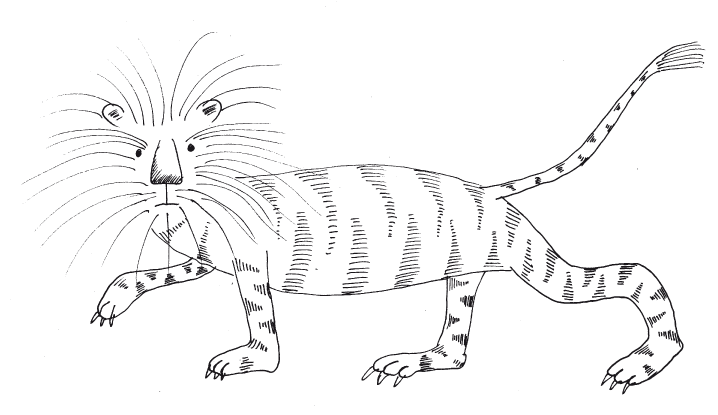

Ahora relataré todos los grandes y maravillosos hechos llevados a cabo por el Gran Señor de los Tártaros, llamado Kublai Khan, y quien vive en el tiempo de redactarse este libro. El Gran Khan es el hombre más poderoso del mundo, y posee tierras, tesoros y súbditos como ningún otro emperador que jamás haya reinado antes en la tierra, como se verá en los capítulos siguientes.
Como ya se ha dicho Kublay Kan desciende del linaje del rey Gengis Khan, y es el sexto Khan. Comenzó a reinar en el año de nuestro Señor Jesucristo de 1256 y alcanzó el reino por su sabiduría y valor, pues varios de sus hermanos y parientes trataron de impedir que reinara, aunque le correspondía el trono por derecho propio. En este momento lleva ya cuarenta y dos años en el trono, y para este año de 1298 estará por cumplor los ochenta y cinco años de edad. Es un hombre valiente, muy hábil con las armas, y tiene fama de ser un hombre virtuoso, sabio y prudente en el gobierno del ejército y del pueblo. Y es el emperador más audaz que hayan tenido los tártaros.
El Gran Khan Kublai es de muy buena estatura. No es muy gordo ni muy flaco, sino de buenas proporciones. Tiene la cara redonda y blanca, las mejillas rosadas, los ojos negros, la nariz muy hermosa, todo su cuerpo está muy bien proporcionado. Tiene cuatro esposas, veintidós hijos, y un hijo primogénito quien le sucederá en el trono. Cada una de estas esposas tiene el título de Emperatriz y poseen una corte real con su propio palacio, con trescientas doncellas escogidas y muchos criados y otros muchísmos súbditos, de suerte que el séquito de cada una de ellas se compone de cerca de diez mil hombres y mujeres.
El gran rey Kublai reside durante tres meses, diciembre, enero y febrero, sin interrupción en la capital del reino de Catai, la ciudad regia llamada Cambaluc, donde tiene el palacio real, que es como ahora contaré.
En primer lugar, el palacio es cuadrado por todas partes y cada uno de sus cuatro muros mide ochos millas, y lo rodea un profundo foso. La muralla del palacio es de gran grosor, con una altura de diez pasos. La fachada exterior está pintada por todas partes de blanco y rojo. En cada esquina de la muralla se levanta un palacio grande y hermoso; igualmente hay otro palacio en el centro de cada fachada de las murallas principales, de manera que hay en todo el contorno ocho palacios. Este maravilloso palacio tiene cinco puertas, de las cuales la puerta central es la más amplia de todas y no se abre jamás, sólo cuando el soberano quiere entrar o salir de su palacio, aunque tiene otras dos puertas laterales por las que pasan los que acompañan al monarca. Las tres restantes fachadas están provistas de una única puerta en su centro, por la que puede entrar libremente quienquiera. Detrás de los palacios situados en la fachada, aparece otra muralla cuadrada a la manera del anterior que tiene cuatro millas, y cada lado mide una milla. Es muy gruesa y así como la otra tiene ocho palacios, donde se guardan otras pertenencias y joyas del gran rey. En el centro del espacio interior se encuentra por fin el palacio real del Gran Khan.
Este es el palacio más grande y maravilloso que nunca se haya construido. No tiene varios pisos, pero su fachada se levanta unas diez palmas de altura desde el suelo. El techo es muy alto y está primorosamente pintado, y a su alrededor un gran muro de mármol sostiene una terraza que rodea todo el palacio, de tal forma que el Gran Khan puede pasear por allí y puede vigilar todo el exterior. La terraza tiene una hermosa baranda que le sirve para apoyarse.
Las paredes de las salas y de las habitaciones están totalmente recubiertas de oro y de plata y en ellas se representan hermosas pinturas de leones, dragones, pájaros y toda clase de animales, y otros hermosos cuadros con historias de batallas. Gracias a estos adornos y pinturas el palacio resplandece sobremanera. En cada una de las fachadas del palacio hay una gran escalera de mármol que sube desde el piso hasta lo alto del muro que las rodea.
En el salón principal se pueden sentar a comer al mismo tiempo más de seis mil hombres. Detrás de las murallas y entre los palacios hay cuatrocientas habitaciones, con amenos jardines, cubiertos de praderas y arbustos silvestres de sabrosos frutos. Es un palacio tan grande y hermoso, tan bien proporcionado, que ningún hombre en todo el mundo podría construirlo o imaginarlo mejor. Sus techos, vistos desde el exterior, son rojos, verdes, amarillos y azules, claros y oscuros, y de todos lo colores imaginables, que brillan de tal forma que se pueden ver desde mucha distancia. Es tan sólido que podría durar más de mil años.
En los jardines y praderas que hay entre los muros de los que hablé antes viven muchos animales extraños y salvajes, como ciervos blancos, gamos, ardillas, y aquellos bichos de los que se saca el almizcle, y de los que hablé ya en el libro primero, así como cabras, y otros muchos animales. Todos los patios están llenos de estas bellas criaturas, excepto los caminos reservados para los caminantes. Todos los prados tienen mucha hierba y todos los paseos están pavimentados y elevados, de tal forma que nunca se encharcan cuando llueve.
En uno de los extremos del palacio hay un estanque grande y profundo lleno de toda clase de exquisitos peces, que se llevan allí de todos los rincones del reino, de tal forma que el Gran Khan puede elegir cualquier pez en cualquier momento. Al estanque lo llena un río que corre por allí, y hay unas rejas de hierro a la entrada y salida del estanque para que los peces no puedan escapar. También se ven allí cisnes y otras muchas aves de agua.
Por fuera del palacio y a poca distancia, el Gran Khan mandó construir un monte artificial, sembrado con hermosos árboles que nunca pierden sus hojas y siempre están verdes. Cuando el rey sabe que hay un árbol hermoso en algún lugar del reino, sin importar lo grande que sea, hace que se le traslade allí con todas sus raíces a lomo de elefantes, incluso desde las regiones más remotas, y ordena que se plante en el jardín, y así tiene allí los árboles más hermosos del mundo. Todo el monte es delicioso y como todas las cosas son verdes, se llama Monte Verde. En su cumbre hay otro palacio pintado de verde, por fuera y por dentro. Gracias a la hermosa vista que le ofrece este monte, el Gran Khan se recrea allí en sus ratos de descanso, y esta es la razón por la que lo mandó construir.
La ciudad de Cambaluc, donde se levanta el hermoso palacio de Kubali Khan, se encuentra a la orilla de un gran río en la provincia de Catai, y antiguamente fue famosa y quiere decir en nuestra lengua “La ciudad del señor”. A Cambaluc llegan tantas y tan maravillosas mercancías, que superan en volumen a cualquier ciudad del mundo entero: allí llegan piedras preciosas, perlas, seda y preciosas especias en incalculable abundancia desde la India, Mangi, Catai y otras regiones lejanas. Está situada en un lugar óptimo y se puede llegar allí desde todas las regiones con mucha facilidad, pues Cambaluc se encuentra en el centro de muchas provincias. De esta forma, según los cálculos que llevan a cabo los comerciantes de la tierra, no pasa un día en todo el año en que no lleguen allí mercaderes extranjeros con más de mil carretas cargadas de seda, pues en la ciudad de Cambaluc se elaboran infinitos trabajos en oro y seda.
Ahora contaré cómo se celebran los banquetes del Gran Khan. Cuando el soberano quiere celebrar alguna fiesta en el gran salón, la corte se sienta a la mesa de la siguiente manera: en primer lugar, la mesa del rey se pone más elevada que todas las demás, de tal forma que el Khan sentado al fondo del salón, en el costado norte, pueda mirar hacia el sur; a su izquierda, es decir, junto a él, se sienta su primera esposa, la emperatriz mayor; a su derecha, más abajo y en otra mesa, se sientan sus hijos y sobrinos, según orden de edad, y los que descienden de estirpe imperial. A continuación los barones y príncipes y demás se acomodan en mesas todavía más bajas. Siguiendo el mismo orden, se acomodan a los pies de la emperatriz mayor las demás reinas y las esposas de los grandes barones; en efecto, el rango que tiene el príncipe o el barón lo poseen también sus mujeres. Todos los nobles que comen en la corte en las fiestas del rey llevan a sus esposas al banquete. Las mesas están dispuestas de tal manera que el Gran Khan pueda contamplar a todos los invitados.
A los costados del gran salón, hay otras salas laterales, donde se sientan a veces más de cuarenta mil hombres, sin contar los que pertenecen a la corte del rey, pues a estos banquetes acuden muchos hombres cargados de hermosos regalos, procedentes de regiones lejanas y extranjeras y traen joyas y muchas cosas curiosas y desconodidas. También llegan juglares para cantar y hombres para hacer todo tipo de juegos.
En mitad del salón donde está la mesa del Gran Khan se pone un hermoso pedestal con un recipiente de oro lleno de vino o de alguna bebida exquisita, adornado con relieves de oro purísimo, que representan distintos animales. En cada esquina de este recipiente hay una jarra de plata llena de extraordinarias bebidas, y de esta se sirven en unas jarras más pequeñas también de oro que se ponen entre cada dos comensales en las mesas de los invitados al banquete real. Hay también otra cantidad infinita de copas de oro y de plata que todos aquellos que las ven quedan sin poder hablar, y ninguno que no lo ha visto apenas puede imaginarlo ni dar crédito a quienes se lo cuentan.
Todos los servidores que atienden al rey mientras come son grandes barones, que van de un sitio a otro preguntando a los invitados si necesitan algo, y si alguno quiere vino, leche o carne, se lo sirven de inmediato por medio de los sirvientes. Todos, sin excepción, llevan la boca tapada con un finísimo pañuelo de seda, para que el aliento de quien sirve no pueda rozar su comida o su bebida. Cuando el rey levanta la copa o quiere beber, todos los instrumentos musicales empiezan a sonar, y los barones y los criados que sirven en el salón se hincan de rodillas, y sólo así de esta manera bebe el Gran Khan. Cuando termina de beber, los instrumentos dejan de tocar y todos los invitados y presentes se levantan de nuevo.
No diré nada de los manjares que se llevan a las mesas, pues cada cual puede imaginar por sí mismo que, en una corte tan fastuosa, se prepara una comida exquisita y abundante. Cuando termina el banquete se retiran los platos de la mesa y se levantan todos los artistas y músicos y entonan dulces melodías, y los juglares, los comediantes y los magos hacen grandes juegos y trucos ante el gran rey y los demás que comen en su corte, y al final todos se marchan y regresan a sus propias casas.
Todos los tártaros celebran solemnemente el día del nacimiento del Gran Khan, el veintiocho del mes de septiembre, día en el que hacen la mayor fiesta del año, exceptuando las que celebran para el comienzo del año. En esta fiesta de su cumpleaños el rey se pone un precioso traje de oro, cuyo valor es infinito. El rey tiene en su corte a doce mil barones y caballeros, que llevan el título de Fieles Compañeros del rey. A todos los viste de manera similiar siempre que celebra una fiesta, con cinturones de oro y calzados en plata de manera muy primorosa, de tal forma que cada uno vestido con este maravilloso atuendo parece un gran rey. Aunque los trajes del Gran Khan sean los más ricos de todos, los trajes de los demás caballeros valen tanto, que muchos de ellos sobrepasan la estima de diez mil bizancios de oro. Así, pues, da todos los años a sus barones y caballeros sin excepción vestidos adornados de oro, perlas y otras piedras preciosas, además de los cinturones y los calzados por un total de ciento cincuenta y seis mil. Las vestiduras de los caballeros son del mismo color que el ropaje del Gran Kan. En la fiesta de cumpleaños todos los reyes, príncipes y barones súbditos suyos envían regalos a su soberano y sucede también que todos los pueblos, sea cual sea su religión, cristianos, judíos, sarracenos y los demás paganos, invoquen a sus dioses con solemnes plegarias por la vida, la salud y la prosperidad del Gran Khan.
Mientras el Gran Khan reside en Cambaluc, durante los tres meses de diciembre, enero y febrero, por orden suya todos los cazadores de los lugares deben dedicarse a la caza durante un tiempo de cuarenta días alrededor de toda la provincia de Catai, y deben presentar a los dueños de las tierras todos los venados, ciervos, osos, cabras, jabalíes, gamos y otros tales animales. Antes de enviar su caza al Gran Señor, aquellos que viven a treinta días de distancia están obligados a entregar los animales limpios de entrañas en carretas o en barcos. Aquellos que se encuentran a más de treinta días de la corte, están obligados a mandar sólo los cueros curtidos que se necesitan para las armas.
Ahora hablaré de las fieras que el Gran Kublai Khan lleva en su compañía cuando va de caza. Tiene el Gran Khan muchos leopardos domesticados muy útiles para cazar y apresar otros animales. Tiene también leones muy hermosos, mayores que los que hay en Babilonia, con el pelaje de su piel con rayas a lo lagro y en colores negro, blanco y rojo, que están también adiestrados para cazar con hombres y capturar con los cazadores jabalíes, osos, ciervos, cabras, asnos y bueyes salvajes; cuando los cazadores del rey quieren llevar consigo a estos leones, transportan dos de ellos en una carreta, y cada uno tiene por compañero un perro pequeño, que ha sido adiestrado desde cachorro. Tiene también un número incontable de águilas amaestradas, de tanta fortaleza que cazan liebres, cabras, gamos y zorras; muchas de estas águilas son de tal audacia, que se abalanzan con gran fuerza sobre los lobos, y por más grandes que estos sean no pueden librarse de su ataque sin caer en sus garras.

Cuando llega el mes de marzo el Gran Khan parte de la ciudad de Cambaluc, y avanza por el campo hasta el mar Océano con todos sus halconeros, que son más de diez mil, y quienes llevan un sinfín de halcones peregrinos y alrededor de quinientos gerifaltes. Los halconeros entonces van de lado a lado por todo el campo, y cuando ven aves, que se crían allí en gran abundancia, sueltan los gerifaltes y halcones para su captura; las piezas capturadas se las llevan en su mayor parte al rey. El monarca va con ellos en persona, sentado sobre un bellísimo pabellón construido de madera, que va armado con mucho artificio sobre cuatro elefantes; por fuera está recubierto de pieles de león, y por dentro se halla totalmente decorado con oro. Junto a los elefantes que cargan el pabellón cabalgan muchos barones y caballeros, que no se separan del rey y que, cuando ven pasar faisanes, grullas u otras especies, se lo indican a los halconeros que acompañan al monarca, los cuales a su vez lo notifican inmediatamente al rey. Este, haciendo abrir el pabellón, ordena soltar los gerifaltes que le place, y así, sentado en su sitial, contempla el juego de las aves. El Gran Khan lleva también consigo diez mil hombres que se esparcen de dos en dos por el campo, y cuya tarea es atender a los halcones, azores y gerifaltes en vuelo y, si fuere necesario, prestarles socorro; son llamados en lengua tártara restaor, es decir, “guardianes”, y están atentos a que las aves no sufran daño ni se pierdan; en efecto, los que se encuentran más cerca están obligados a socorrerlas, si fuera necesario. Toda ave, sea de quien fuere, tiene una tablilla diminuta en sus patas con la marca de su dueño o del halconero, para que, una vez suelta, pueda ser devuelta a su amo.
En estas cacerías se apresan animales y aves en número infinito, ya que por orden del rey en todas las provincias que limitan con Catai ningún morador de la ciudad o del campo tiene permiso para poseer perros de caza y aves de presa en una distancia de veinte días a la redonda. Además, a nadie le está permitido cazar desde comienzos del mes de marzo hasta el mes de octubre, como tampoco se le permite capturar cabras, gamos, ciervos, liebres u otros animales salvajes. Quien se atreva a hacer lo contrario sufre castigo, por lo que las liebres, gamos y otros animales semejantes pasan a la vera de los hombres y ninguno se atreve a cazarlos. Cuando se termina el tiempo de la caza, el rey regresa con todo su séquito a la ciudad de Cambaluc por el mismo camino por el que había ido a la llanura, cazando aves y animales. Cuando llega a la ciudad, celebra una corte muy grande y jubilosa en el palacio real, y después todos los que habían sido llamados a participar en la caza regresan a sus hogares.
Ahora hablaré de las monedas y los dineros que se fabrican en la ciudad de Cambaluc. Allí hay tal abundacia de tesoros, que se podría decir que el Gran Khan tiene el secreto de la alquimia como ahora relataré.
Para fabricar la moneda el Gran Khan envía a unos hombres para traer la corteza de unos árboles que nosostros llamamos moreras y que en el lenguaje de ellos se llaman gelsus, que son los mismos con los que los gusanos elaboran la seda comiendo de sus hojas. Hay tanta cantidad de estos árboles que todos los campos están llenos de los mismos. De la corteza extraen la pulpa y la trituran y apelmazan como hojas de papel, parecidas al papel del algodón. Después las cortan en pedazos de diferentes tamaños, pedazos grandes y pequeños a modo de dineros y marcan en ellos diversas señales, según lo que ha de valer tal moneda. En todos estos dineros se imprime el Sello del Gran Señor, pues los dineros que no lo lleven no tienen ningún valor. Y hace fabricar tal cantidad de estas hojas de moneda que podría pagar todos los tesoros del mundo sin que le cueste nada.
De este dinero ordena el rey que se haga gran cantidad en la ciudad de Cambaluc, y una vez hechos los papeles, el Gran Khan hace todos los pagos del reino. Nadie puede rechazarlos y a nadie, bajo pena de muerte, le está permitido acuñar o pagar con otra moneda en todos los territorios sometidos al señorío del Gran Khan. Además, ninguno, aunque sea de otros dominios, puede servirse de otra moneda dentro de las tierras del Gran Khan, y sólo los oficiales del rey la fabrican por orden del monarca. A menudo sucede que los mercaderes que vienen a Cambaluc de la India y otras provincias traigan oro, plata, perlas y piedras preciosas, y todo ello lo hace comprar el rey por medio de sus oficiales y ordena que el pago se haga en su dinero. Si los mercaderes son de tierras extrañas, donde no tiene curso aquel dinero, lo cambian de inmediato por otras mercancías que llevan a su patria. Esta forma de pago es la más fácil de todas y se puede llevar por los caminos sin incomodidad. Con este dinero paga el sueldo de sus oficiales y se compra todo lo necesario para la corte, así, el Gran Khan nunca paga con oro ni con plata, y tanto los ejércitos como todos los funcionarios reciben sus salarios con papel moneda, dinero del que el Gran Señor siempre tiene todo el que quiera.
De esta manera se prueba que el Gran Khan ha podido reunir el mayor tesoro del mundo y que puede superar a todos los príncipes del mundo en gastos y riquezas, y estos juntos nunca poseerán tanta riqueza como el Gran Khan. Ya he hablado de lo que hace el Gran Khan para convertir en dinero los papeles, y ahora hablaré de la gran bondad que muestra el Gran Señor con sus súbditos.
Todos los años el Kan despacha a sus fieles mensajeros e inspectores a todas las provincias de su reino, para indagar si algunos de sus súbditos perdieron sus cosecha aquel año, ya sea por causa de las langostas, las orugas, alguna sequía o una peste. Si alguna comarca o región ha sufrido una catástrofe, el Señor entonces les perdona los tributos que debían entregarle ese año y hace que se les lleve todo el grano que necesiten en cantidad suficiente para la comida y para que puedan sembrar de nuevo. Lo que demuestra la gran bondad con la que el Gran Señor trata a sus súbditos. Igualmente, también se ocupa de socorrer a quienes han sufrido alguna epidemia en los rebaños de animales, y perdona a los que sufren esta plaga el tributo del año según la pérdida que hayan tenido, y hace que se les venda algunos de sus rebaños y ganados. De esta manera, todos los pensamientos y preocupaciones del Gran Señor se dirigen al bienestar de sus súbditos, para que siempre tengan con qué vivir, y cómo trabajar y mejorar así sus riquezas y bienes. Así es como el Gran Khan cuida de sus súbditos, pero ahora relataré otra orden útil y maravillosa que ha impuesto en rey en sus comarcas.
En todas las vías principales que atraviesan la provincia de Catai y las comarcas vecinas, por donde pasan los mercaderes, los mensajeros y otros caminantes, el rey ha ordenado plantar árboles a poca distancia unos de otros. Los ha mandado plantar de una especie de árboles muy fuertes y grandes, para que así su altura se pueda ver desde la distancia. De esta manera todos pueden reconocer los caminos, y no pierden la ruta ni de día ni de noche y tienen también sombra para descansar. Cuando el terreno es pedregoso y desierto, el Gran Señor ordena plantar señales y columnas que también marcan la senda. Ha nombrado, además, varios barones para que vigilen que todos los senderos se encuentren siempre en buen estado. Hay que agregar que el Gran Señor también ha plantado estos árboles porque sus adivinos y astrólogos han dicho que quien los planta disfrutará de una vida larga.
Ahora contaré cómo el Gran Señor practica la caridad con los pobres y mendigos de la ciudad de Cambaluc, y que es otra cosa digna de alabanza: manda registrar en la ciudad de Cambaluc el número de las familias y los nombres de los que no cosechan grano ni pueden comprarlo, que son muchos, y ordena que, de sus silos donde guarda gran abundancia de granos, se les dé anualmente a todos ellos lo necesario para sobrevivir todo el año. Si se entera que alguna familia se empobrece por un repentino cambio de la suerte, perdiendo la fuente de su sustento, el Gran Señor le hace entrega de semillas para que pueda pagar sus gastos durante todo un año. A nadie que lo solicite se le niega el pan en su corte, y no pasa un día en todo el año en que no acudan a mendigar más de treinta mil pobres entre hombres y mujeres. Esto demuestra la gran misericordia y piedad del Gran Khan, y como a ningún pobre se le niega el pan, todos sus súbditos lo honran como a un dios.
El Gran Señor también les da sustento y vestido a más de cinco mil astrólogos y adivinos que viven en la ciudad de Cambaluc. Todos se dedican sin descanso a la práctica de la astrología, estudiando los signos de los planetas, de las horas y los minutos de todos los días durante el año entero. Así, estudian la disposición de los días, de acuerdo con el recorrido de la luna, y descubren y prevén el clima que la luna lleva consigo en sus fases, así como la posición de los planetas. De tal forma estos astrólogos saben que en tal luna habrá relámpagos y truenos y tiempo de tempestades, y saben que en otra luna habrá temblores de tierra, vendavales, o lluvias abundantes. También pueden saber si habrá alguna peste o una guerra o varias enfermedades.
Después de contar todo esto cambiaremos de tema. Terminado lo que por el momento decidí contar acerca de la provincia de Catai, la ciudad de Cambaluc y la magnificencia del Gran Khan, pasaré ahora a describir algunas de las regiones limítrofes. Una vez el soberano me despachó a mí, Marco Polo, a comarcas remotas para un negocio de su imperio, y yo, partiendo de la ciudad de Cambaluc, estuve de viaje durante cuatro meses, avanzando siempre en la misma dirección. Así, pues, contaré algunas de las cosas maravillosas que encontré al ir y volver por aquel camino.
Al salir de Cambaluc se encuentra a diez millas un gran río que se llama Pulisanghín, que desemboca en el mar Océano. Por su curso bajan muchas naves con muy grandes mercaderías. Hay allí un puente de mármol muy hermoso de trescientos pasos de largo y de gran anchura, que permite que puedan cruzarlo diez jinetes al mismo tiempo. El puente tiene veintitrés arcos y otras tantas columnas de mármol en el agua, y tiene en total mil doscientos leones de mármol que sostienen cada uno una columna, por lo que este puente es tan bello y suntuoso que no creo que pueda encontrarse otro igual en el mundo.
Tras cabalgar muchos días se encuentra la ciudad de Gin, grande y hermosa; hay allí muchos monasterios de ídolos. Se hacen también paños muy finos de oro y de seda y excelentes lienzos. Tiene asímismo muchas hospederías públicas para los viandantes. Los ciudadanos son por lo general artesanos y mercaderes. A una milla después de pasar esta ciudad se bifurca en dos el camino: un ramal atraviesa la provincia de Catai, y el otro lleva al mar por la región de Mangi. Por la provincia de Catai se va en otra dirección durante más de diez días de camino, y a cada paso se encuentran ciudades y aldeas. Hay allí muchas huertas y campos muy hermosos; hay numerosos mercaderes y artesanos. Los hombres de esta región son muy amables y amistosos.
Dejando ahora de hablar de estas y otras ciudades y provincias, hablaré de la hermosa historia que ocurrió entre el llamado Rey de Oro y el monarca Preste Juan, de quien ya he hablado anteriormente. Cuentan los habitantes que aquel Rey de Oro se rebeló contra el Preste Juan y construyó un castillo tan poderoso que este último nunca pudo asaltarlo ni derrotarlo. Entonces un día, siete criados de Preste Juan fueron a verlo y le propusieron que los enviara al castillo del Rey de Oro y que ellos encontrarían la manera de derrotarlo. Preste Juan les prometió que si lograban derrotar al Rey de Oro él estaría siempre en deuda con ellos. Los siete mensajeros partieron y convencieron al Rey de Oro que venían a su corte para servirlo. Así, permanecieron a su lado por varios años, hasta que el rey les tomó confianza y cuando iba de caza siempre quería que sólo ellos lo acompañaran, pues ya los trataba como si fueran sus hijos.
Uno de estos días que el Rey de Oro salía de caza en compañía de sus siete servidores, tras cruzar un río los siete se pusieron de acuerdo en que ese era el momento de apresarlo y llevarlo ante Preste Juan. Lo rodearon, desenvainando las espadas, y lo amenazaron con matarlo si no los acompañaba donde Preste Juan. Cuando el Rey de Oro escuchó ese nombre les pidió que tuvieran clemencia con él y que si acaso él no los había tratado como a sus propios hijos. Los siete le contestaron que no le servirían de nada sus plegarias ni ninguno de los recuerdos, de tal forma que se vio obligado a acompañarlos.
Cuando Preste Juan vio al llamado Rey de Oro se alegró mucho y lo recibió con palabras amenazadoras, recordándole cómo él mismo lo había considerado como el mejor de todos sus súbditos. El Rey de Oro no contestó, pues no supo qué decir. Pensó entonces que Preste Juan le daría la sentencia de muerte, pero este ordenó a sus vasallos que obligaran al Rey de Oro a cuidar sus rebaños y que lo vigilaran día y noche. De esta forma, el Rey de Oro permaneció dos años cuidando los rebaños, padeciendo la peor de todas las miserias. Al pasar el tiempo, lo llamó Preste Juan a su presencia, y el Rey de Oro pensó que quería matarlo. Pero Preste Juan le comunicó que olvidaría su anterior ingratitud y rebeldía y que sólo recordaría el amor que le tenía, y que, por lo tanto, ordenaba que le quitarn las miserables ropas de pastor y devolvieran sus antiguos trajes, símbolos de su realeza.
El Rey de Oro quedó asombrado, sin saber qué iba a suceder. Entonces Preste Juan le dijo que ahora sólo quería recordar la antigua amistad que los unía, devolviéndole la corona y aconsejándole que de ahí en adelante se mostrara agradecido por sus favores y misericordia. Le deseó buen viaje y que viviera feliz en su reino y entre sus súbditos, manteniendo obedediencia a su señor. El Rey de Oro se arrepintió y prometió por su fe mantenerse siempre fiel a su nombre. Preste Juan ordenó que le dieran caballos y provisiones y una buena escolta. El Rey de Oro regresó a su reino y desde entonces se mantuvo como buen amigo y vasallo de su rey. Pero ahora, después de contar la bella historia del Rey de Oro, cambiaré de asunto.
Después de pasar varias jornadas de camino, se llega a un río llamado Caramorán, y es un río tan extenso que no hay puente alguno en el mundo que lo pueda cruzar de una orilla a otra. Es muy ancho y profundo, y va a desembocar en el mar Océano que rodea a todas las tierras del mundo. A lo largo de este río habitan multitud de pueblos y ciudades, donde viven muchos mercaderes y artesanos. En la región que lo rodea hay abundante comercio de la seda y el jengibre, y hay una cantidad infinita de aves que parece todo increíble. También en sus riberas crecen los bambúes, con los que los comerciantes fabrican multitud de objetos para uso diario.
Ahora contaré brevemente algo de la provincia llamada del Tíbet, y es tan vasto este territorio que contiene ocho reinos propios y multitud de ciudades y pueblos. Hay también incontables ríos, lagos y montañas, donde abunda el oro. Poseen mucha canela y jengibre y gran cantidad de especias, desconocidas en nuestras tierras. Viven allí en esta región los peores hechiceros y astrólogos de todas aquellas tierras, pues son capaces de realizar los hechizos más extraños, y las cosas más imposibles que se hayan visto o escuchado nunca en ningún lugar. Son cosas tan diabólicas, que no las relataré en este libro para no escandalizar a los lectores. Sólo diré que pueden causar tormentas y tempestades, con rayos y truenos, o, por el contrario, hacen desaparecer cualquier tempestad y hacer otras miles maravillas.
Se encuentran también en esta región los perros más grandes del mundo, que tienen el tamaño de un asno, y resultan muy útiles para cazar unos bueyes feroces llamados beyamini, y hay también unos halcones muy veloces que cazan como ningún otro. Como la provincia está convertida en un desierto se han multiplicado en ella sobremanera las fieras salvajes, por lo que es muy peligroso pasar por allí, sobre todo de noche. Sin embargo, los mercaderes y los viajeros recurren a la siguiente argucia: cuando quieren acampar al caer el sol, toman grandes manojos de cañas verdes, a las que prenden fuego para que ardan durante toda la noche; cuando ya se han calentado un poco, saltan con tanta fuerza y vigor de un lado a otro y crepitan con tanto estruendo, que su estrépito se escucha a muchas millas a la redonda. Cuando las fieras salvajes oyen aquel ruido espantoso les entra tanto pavor, que de inmediato se dan a la fuga, hasta llegar a un lugar donde deje de escucharse aquel terrible estruendo. Así los viajeros y mercaderes se libran durante las noches de estas alimañas. También los hombres, cuando oyen este estrépito, experimentan un gran susto; además, sucede que los caballos y los animales de los viajeros sienten tal pánico, y antes de acostumbrarse a los ruidos emprenden la huida de tal forma que muchos mercaderes han perdido ya muchos animales.
Ahora contaré que después de atravesar aquel gran río, se llega a otra región llamada Caragián. Está sometida al dominio del Gran Khan, y su rey es un hijo de Kublai Khan llamado Cogacín. En esta tierra se encuentran grandes culebras y serpientes inmensas, que son muy repugnates a la vista. Muchas de ellas tienen diez pasos de longitud y catorce palmos de grosor, que parece cosa increíble. Estas son las más grandes y cada una de estas serpientes tiene dos patas sin pezuñas junto a la cabeza, aunque en su lugar tienen tres garras, dos pequeñas y una grande, como las de los leones. La cabeza es enorme y sus ojos grandísimos, como hogazas de pan. Su boca es de tamaño tan grande que puede engullir con facilidad y de una sola vez a un hombre. Tiene colmillos larguísimos. Como estas serpientes son tan espantosas y grandes y feroces, no hay persona, ni hombre ni mujer, que no tenga miedo de acercarse a ellas, e incluso los animales salvajes temen acercarse.
Ahora contaré la manera como las cazan. Estas serpientes monstruosas permenecen todo el día en cavernas subterráneas a causa del calor, y salen de noche, buscando todos los animales que puedan devorar; se dirigen a las madrigueras de los leones, osos o animales semejantes, y se comen de un bocado a los animales adultos y a sus crías, ya que ninguna bestia puede aguantar su ataque y su fuerza. Después de haber comido van a buscar agua hasta los ríos o las fuentes. Como son tan pesadas y tan gruesas, dejan como huella un surco tan grande y tan ancho que parece que hubieran arrastrado por el arenal grandes toneles llenos de vino. Los cazadores tienen en cuenta por donde pasan estos monstruos y entonces durante el día entierran en la arena muchas estacas, en cuyo extremo están clavadas espadas de acero muy puntiagudas, que recubren después de arena para que las serpientes no las vean. Así, cuando llega la noche y las serpientes se lanzan a beber agua, mueren en el acto o reciben una herida gravísima. Entonces aparecen los cazadores y, en primer lugar, extraen su hiel, que venden a precios altos por su gran valor medicinal, ya que el que sufre la mordedura de un perro rabioso y bebe de esta hiel sana por completo; asímismo, la mujer que se encuentra en los dolores del parto y toma un poco de esta queda fuera de peligro, y el que tiene una herida infectada, si se unta la hiel en el lugar enfermo se cura perfectamente en pocos días.
Ahora que ya he hablado de estas provincias, pasaré a contar de otras comarcas.
Cuando se avanza cinco días de camino desde la provincia de Caragián, aparece la provincia de Ardandam, también sometida al dominio del Gran Khan. Su ciudad principal se llama Ursián. En esta comarca se da oro al peso, por esta razón acuden allí los comerciantes, que cambian el oro por plata y obtienen muchas ganancias; también pagan con porcelana, que traen de la India. Sus habitantes se alimentan de arroz y de carne y elaboran una excelente bebida de arroz y de especias finas. Los hombres y las mujeres de la región llevan los dientes recubiertos con láminas de oro finísimas, puestas de tal manera que encajan perfectamente con la dentadura. Todos los hombres son guerreros, dedicándose únicamente a las armas y a la caza de animales y aves, mientras que las mujeres se cuidan por completo del hogar y tienen siervos comprados que están a sus órdenes. En esta comarca no hay ídolos, sino que cada familia adora a su progenitor ancestral, del que proceden los demás miembros de la familia. Habitan en lugares muy salvajes, entre enormes montañas y selvas muy grandes.
Hablaré de otra provincia llamada Bengala, tal como ahora los lectores oirán. Bengala se encuentra al sur, y cuando yo, Marco Polo, estuve en su corte en el año 1290, no la había sojuzgado todavía el Gran Khan. Sin embargo sus ejércitos ya trataban de conquistarla. Tienen rey por sí y hablan lengua propia. Todos los habitantes de esta región son idólatras. Se alimentan de carne, arroz y leche.
Hay abundancia de algodón, jengibre, azúcar y otras muchas especias aromáticas, y poseen unos bueyes que igualan en tamaño a los elefantes. El pueblo es idólatra, y los hombres y mujeres se dibujan con alfileres y agujas la cara, el cuello, las manos, el vientre y las piernas, y se dibujan allí figuras de leones, dragones y toda clase de aves, y otras imágenes extrañas. Lo hacen de manera muy habilidosa, de tal forma que las figuras se fijan en la piel y nunca desaparecen. Consideran a quien posea más pinturas en su cuerpo como el más noble y más hermoso.
Después de salir de esta provincia se encuentran bastantes ciudades y muchas aldeas que pertenecen a la provincia de Catai. He de decir que las muchachas de Catai son las más castas y discretas del mundo, pues no danzan ni hacen travesuras, no se la pasan todo el día al lado de la ventana para ver a los que pasan, no van a las fiestas, y si tienen que ir a cualquier lugar, así sea a los templos de sus ídolos o a visitar a sus parientes y amigos, siempre van en compañía de su madre. No voltean a mirar a la gente, pues llevan en la cabeza unos gorros que nos las dejan mirar a otro lado distinto de la dirección que llevan sus pasos. Ante los mayores se portan con decencia y sensatez y jamás dicen tonterías, y sólo contestan cuando las interrogan. En sus habitaciones permanecen dedicadas a las labores que les corresponden. Muy rara vez se muestran ante sus padres o sus hermanos o ante los ancianos del hogar. Tampoco prestan ninguna atención a quienes pretenden hacerles galanteos.
Hacen en la provincia de Catai otra cosa que quisiera relatar. Aquí tienen ochenta y cuatro ídolos diferentes, cada uno con su propio nombre. Dicen que el Dios Supremo le ha otorgado a cada ídolo un poder especial; uno puede encontrar las cosas perdidas; otro asegura la fertilidad de la tierra, otro protege los rebaños, y así también para cada cosa existe un ídolo, para las cosas buenas como para las malas. En el caso de los ídolos para las cosas perdidas, los representan como dos pequeñas imágenes de madera que se parecen a unos niños de unos doce años, y en el templo los cuida una anciana que es la que interroga a los ídolos cuando se pierde alguna cosa. La mujer quema incienso y les pregunta a los ídolos y estos le responden dónde se encuentra. Si sucede que se trata de algo robado, la mujer revela el nombre de quien lo tiene. Si no lo devuelve, el ladrón sufrirá un accidente.
Ahora quiero relatar cómo el Gran Khan tomó la ciudad de Saianfú, que se encuentra en la provincia de Mangí, con la ayuda de Micer Nicolo, Micer Mafeo y yo, Marco Polo. Esta ciudad de Saianfú se mantuvo tres años en rebeldía contra Kublai Khan, y durante ese término no pudo ser tomada por los ejércitos de los tártaros cuando conquistaron todo el resto de Mangi. El Gran Khan estaba muy enojado con estas noticias y resultó que entonces estaba en su corte micer Nicolo, mi padre, micer Mafeo, su hermano, y yo, Marco, con ellos. Presentándonos los tres ante el rey, nos ofrecimos a construir unas máquinas que se utilizaban en nuestras tierras y con las que podría hacer rendir sin remisión la ciudad. Teníamos con nosotros a carpinteros cristianos, que fabricaron tres catapultas excelentes, cada una de las cuales lanzaba piedras de trescientas libras; el rey, cargándolas en naves, las envió a su ejército. Cuando fueron asentadas delante de la ciudad de Saianfú, la primera piedra que arrojó la máquina sobre la plaza cayó sobre una casa y destrozó gran parte de la misma. Los tártaros que estaban en el ejército, al verlo, quedaron estupefactos. Así, lanzaron todos los días estas piedras con las catapultas, destrozando todo cuanto quedaba bajo su peso. Los habitantes de la ciudad, al ver la destrucción, quedaron aterrados y fueron todos presa del pánico; temerosos de ver destruida tan gran ciudad por las máquinas y de morir ellos mismos a manos de los tártaros o perecer bajo los derrumbamientos de las casas, enviaron mensajeros a Kublai Khan y se entregaron como habían hecho los habitantes de las otras ciudades. Y todo esto ocurrió gracias a las catapultas que mandaron construir Micer Nicolo, Micer Mafeo y yo, Marco Polo. Dejando atrás este relato pasemos a la gran ciudad de Quinsai, la gran capital de los reyes de Mangí.
Después de varias jornadas de camino se llega a la magnífica y noble ciudad de Quinsai, que quiere decir “la Ciudad del Cielo”, gracias a su belleza, excelencia e importancia. Es la mayor ciudad de todo el mundo y la principal en la provincia de Mangí. En esta ciudad es posible gozar de placeres sin fin, y quien entra allí llega a creer que se encuentra en el Paraíso. Yo, Marco Polo, estuve en ella y observé con atención sus cualidades, y referiré de la manera más detallada y tal y como las vi, en todo su esplendor y maravilla, pues es sin duda la mejor ciudad que existe en todo el mundo.
Su perímetro abarca en circunferencia más de cien millas, pues sus calles y canales son muy largos y amplios. Tiene doce mil puentes de piedra de tanta altura, que las naves por lo general pueden pasar por debajo de ellos. La ciudad se encuentra rodeada por un lago, de agua dulce y cristalina, y hay abundancia de plazas cuadradas donde se organizan los mercados. Un enorme río penetra en el interior de la ciudad a través de pequeños y grandes canales, desembocando en el lago, para después seguir hacia el mar Océano, hacia donde arrastra todas las basuras. Por eso allí el aire es el más saludable.
Existen en ella diez plazas principales, sin contar las otras de cada barrio, y en cada una de estas plazas se reúnen, tres veces por semana, entre cuarenta y cincuenta mil personas, que vienen al mercado llevando todo lo que se pueda desear y en gran abundancia. Hay todo tipo de aves, de frutas y legumbres, especias, y grandes cantidades de pescado. Quien viera la cantidad de pescado pensaría que nunca se podrían vender, pero en pocas horas todo desaparece, pues allí habita una multitud de personas que viven con desahogo y pueden comer carne y pescado en una sola comida.
Además, a lo largo de las calles principales, que atraviesan la ciudad de un extremo a otro, hay muchas casas y grandes palacios rodeados de hermosos jardines. A un lado de los palacios se pueden ver las casitas de los artesanos que trabajan en sus tiendas. Hay doce principales oficios en la ciudad, y cada uno cuenta con doce mil tiendas, y es tan grande el número de artesanos y mercaderías, que parece cosa increíble a quien no lo haya visto.
He de decir también que todas las calles de la ciudad están pavimentadas con piedras talladas y ladrillos, de tal manera que toda la ciudad está limpia y muy cuidada, y cada calle tiene una anchura de diez pasos de lado a lado. Por estas calles pavimentadas van y vienen grandes coches provistos de cortinas y cojines de seda, que pueden llevar hasta seis personas. Todos los días, tanto hombres como mujeres toman estos carruajes para pasear en ellos, de tal modo que es infinito el número de carruajes que atraviesa la ciudad. Sus ocupantes después se dirigen a los jardines, donde encuentran pabellones especiales, donde permanecen todo el día en compañía de sus damas y en la noche regresan a sus casas en los mismos carruajes. Hay también cuatro mil aguas termales, saunas y estanques donde los hombres y las mujeres reposan deliciosamente varias veces al mes, y son los lugares más bellos y grandes del mundo, pues allí pueden bañarse más de cien mujeres y cien hombres al mismo tiempo. Hay en Quinsai tantas familias que su número alcanza la suma de un millón y sesenta mil.
Debo añadir que yo, Marco Polo, estuve en tres de las nueve provincias de la región de Mangí: en Yangiú, en Quinsai de la que he escrito con anterioridad, y en Fingí, pues mi camino atravesaba estas tierras. En cuanto a las otras seis, escuché y tuve conocimiento de muchas otras noticias maravillosas que ahora podría contar. Pero ahora dejo de escribir de los otros reinos de Mangí, pues en caso de describir cada uno y punto por punto serían excesivos los detalles de este libro. Y todo ha sido como lo he contado, con entera verdad.
Es preciso que pase ahora a relatar los hechos concernientes a la India, donde yo, Marco Polo, residí largo tiempo, y donde hice tantas investigaciones y tantas averiguaciones que por todo lo que vi y oí ningún otro hombre podría contarlas mejor y con tanta verdad. Algunas de las cosas que aquí voy a contar son tan maravillosas y extrordinarias que quienes las escuchen quedaran asombrados. Las iré exponiendo en correcto orden, tal como las vi y describí, pues las conozco a la perfección. Así comenzaré sin falsedad, como lo podrá oír y comprobar quien lea.
Aquí acaba el segundo libro escrito por Marco Polo de Venecia
*